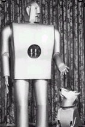

Das Unternehmen "Westinghouse Electric Corp." baute zwei der ersten Roboter mit elektrischem Motor-Antrieb. Sie konnten ihre Körper in einer rechteckigen Koordinatenfläche bewegen. „Elektra“ konnte tanzen, bis 10 zählen und rauchen, und hatte einen motorbetriebenen Gefährten in Form des Hundes „Sparko“, der gehen, Männchen machen und bellen konnte. Die beiden Roboter wurden auf der Weltausstellung in N.Y. vorgeführt. In einer damals sehr aufregenden Demonstration führte George Robert Stibitz erstmals eine Verbindung von 2 Computern über eine Telefonleitung vor. Von New York nach New Hampshire war dies die erste Datenfernübertragung der Welt.